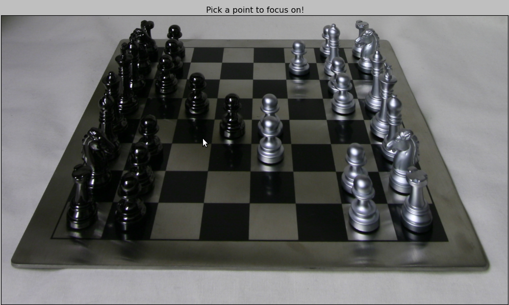
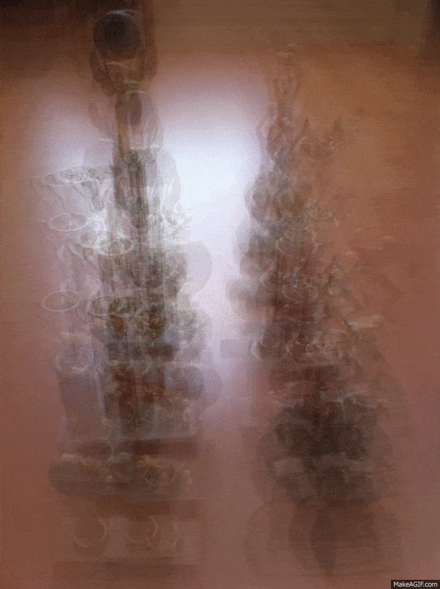
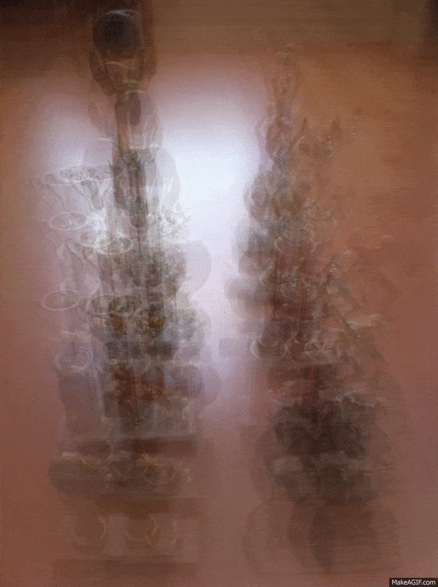

CS194 Project 6: Lightfield Camera
Rohan Chitnis
(Skip to bells and whistles section.)
Background and Approach
For this project, we experimented with and learned about light fields through two tasks. For both tasks, we used a rectified set of images of some particular scene -- I chose a chessboard light field taken by the Lego Gantry. This set of images has the special property that it is taken over a regularly spaced grid that lies perpendicular to the optical axis (the path along with light travels through the camera).
The first task was depth refocusing. We shifted and averaged together the set of images to yield a final image that is focused at different depths. I approached this by parsing the filename of each image in the set, which contains information about the camera translation (this is explained on the light field website). I first observed that simply averaging together all images without any shifting yielded an image which focused on far-away objects, since these are naturally closest together in the original set of images. I then found that shifting all images by the amount prescribed by the filenames led to an image focused on middle-depth objects (the center of the chessboard). Extrapolating from this, I experimented to discover that shifting each image by 3 times the x- and y-shifts given in the filenames leads to an image focused on the closest objects on the board.
The second task was aperture adjustment. I approached this part pretty simply -- I picked a particular shift amount to use for all my results so that they would all be focused on the same point. I chose a multiplier of 1, so that all images were shifted by the x and y amounts specified in the filenames, and the middle-depth objects were in focus. Then, I varied the number of images I averaged together from 1 (just the first, central image in the dataset, so obviously no blurry result here) to 35 (the first 35 images in the dataset). I observed that after about 25, the resulting image always looked pretty much the same.
Depth Refocusing
Following my approach outlined above, I very simply interpolated 30 values from 0 to 3, and used each value as a multiplier times the shifts specified in the filename to determine by how much to shift each image. Here is the resulting gif. So, the first image corresponds to no shift, which focuses on far-away objects as expected, and the last image corresponds to the most shift, which focuses on close-by objects as expected.
Aperture Adjustment
I exactly followed my approach outlined above, ranging the number of images I averaged together from 1 (central image) to 35. (I would have done more, but the gif was getting too large.) An important observation here is that after about 25, the simulated aperture is already so large that (artificially) increasing its size doesn't have any noticeable impact on the final image. As expected here, the more images averaged together, the larger the simulated aperture, and so all parts of the image that are not in focus become blurrier.
Summary
A couple of years ago, I did an internship at Pelican Imaging Corporation, which sought to develop a light field camera using the concept of a microlens array, similar to Lytro's. (Back then, Lytro was also just getting off the ground.) This project really opened my eyes as to the procedure behind some of the features advertised by the company, such as automatic refocusing after the picture is taken. It is amazing how simple all these post-processing techniques can be after one obtains a light field grid of images perpendicular to the optical axis using such a microlens array!
Bells and Whistles
1. Interactive Depth Refocusing
I did this by utilizing a simple method based on what we did in the first project. Basically, I interpolated the y-value of the user's inputted point between 0 and the experimentally determined value of 3 described in the approach section, and used this toward the single-parameter shift amount -- this works because I noticed both the x and y directions must be shifted by the same amount for a particular image in order for the averaging to yield anything meaningful. Here are some screenshots showcasing the results! Note the location of the mouse in each screenshot.
Left: Focusing on the close-by objects. Right: result.

Left: Focusing on the middle-depth objects. Right: result.
Left: Focusing on the far-away objects. Right: result.
2. Real Data
I snapped some pictures of trophies laid out at different depths, and tried my best at following the necessary grid pattern. However, it didn't work well at all because so much precision is required when taking the images, to ensure that shifting each image and averaging them all together will truly lead to a particular part of the image being in focus. For example, simply averaging together my images should cause the far-away ones to align and be in focus, but this does not occur. Another less significant issue is that I only took 9 pictures, whereas hundreds would typically be necessary to produce high-quality results, by averaging out the imperfections in any individual image or positioning. Nevertheless, here are gifs showcasing the results I obtained, using the exact same approaches as described earlier. I did some experimentation to figure out the optimal shift amounts for each image to achieve the best-looking alignment, though it still didn't turn out very good for the reasons described.
The aperture adjustment turned out slightly better, but only because I had manually optimized the shift amount for each of the 9 images separately.
 The original 9 images I took with my phone's camera. Notice the grid layout, which (poorly) mimics the light field images in the Stanford database.

Left: Depth refocusing result. Right: Aperture adjustment result.
The original 9 images I took with my phone's camera. Notice the grid layout, which (poorly) mimics the light field images in the Stanford database.

Left: Depth refocusing result. Right: Aperture adjustment result.